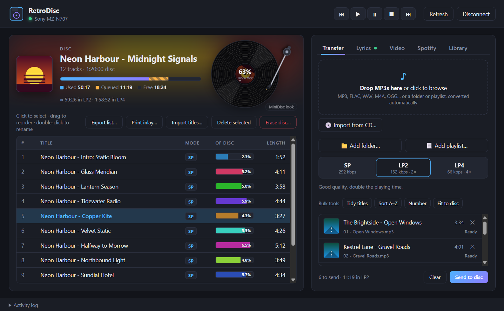
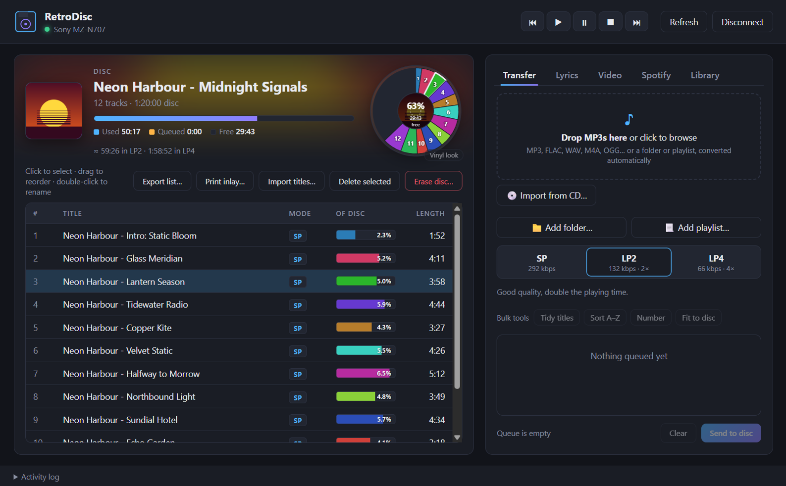
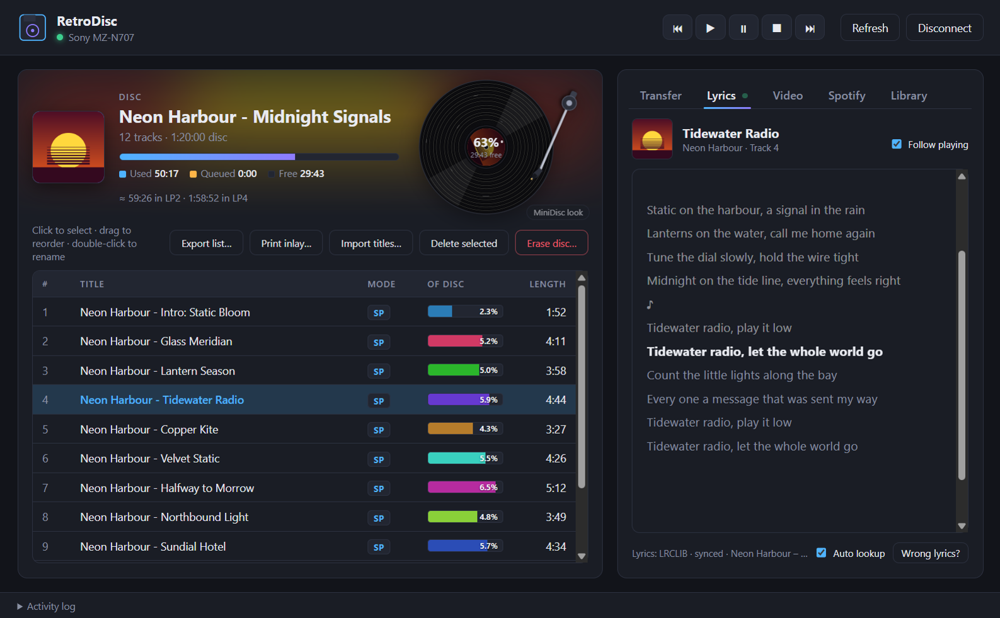
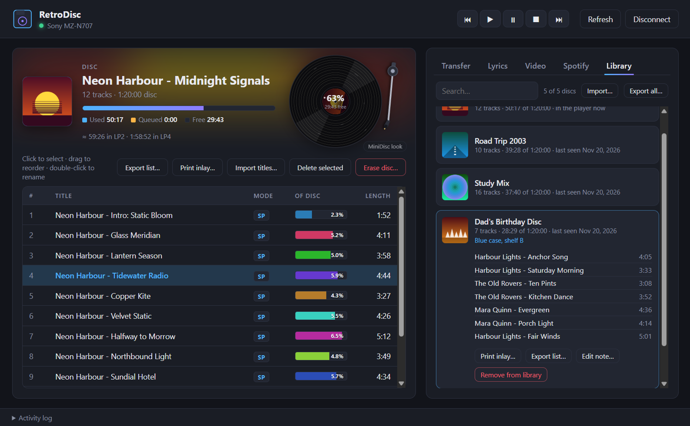
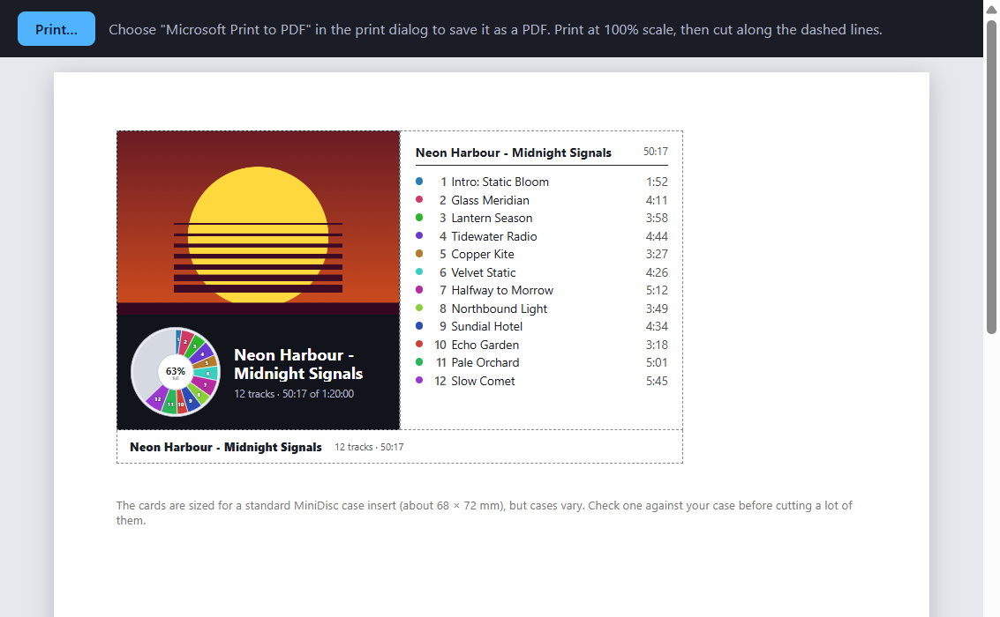

Windows installer, plus Mac disk images for Apple Silicon and Intel. Free, on GitHub.
TRK 03LP2
MY MIXTAPE74:00
In the app
See your discs, hear them, print them
Five screens from the app, taken with a made-up demo disc.

Your disc as a record. The tonearm lands on the track that is playing and creeps along as it plays. The bar shows what is used, what is queued and what is free, and LP2 doubles the room.

Or the MiniDisc look. Every slice is a track, sized by the space it takes on the disc. Click a slice to pick the track.

Synced lyrics. The current line is highlighted and scrolls along while the MiniDisc plays.

A library of every disc. Each disc you read is remembered, so you can search your whole collection with no disc in the player. Add a note to say which case it lives in.

Print an inlay. A cover card, a numbered track list with times, and a spine strip, ready to cut out for the case.
What it does
Everything for your MiniDisc, in one window
Plug in the player over USB, click Connect, and the disc appears with its title, tracks and a capacity bar.
Disc pie chart
See how much of the disc each track takes. LP2, LP4 and mono tracks count for less space, and every track also shows its share in the list.
Vinyl record and tonearm
Switch the chart to a black record that turns at 33 1/3 rpm while a track plays. The tonearm lands on the playing track and creeps inward.
Play the track you pick
Select a track and press Play, and the player starts that track. Pause, stop, next and previous work too, with the playing track highlighted.
Print a case inlay
A printable card with the cover art, the pie chart, a numbered track list with times and a spine strip. Print it, or save it as a PDF.
Disc library
Every disc you read is remembered with its tracks, lengths and cover. Search the collection without the disc, and add a note such as "blue case, shelf B".
Library backup
Export the whole library to a spreadsheet-friendly CSV or a JSON backup, and import the backup again on a new PC. Importing only adds, it never deletes.
Read your discs
See the disc title, every track, its recording mode (SP, LP2 or LP4) and length, plus how much space is left.
Copy music to disc
Drag in MP3, FLAC, WAV, M4A or OGG files. They convert automatically and record in SP, LP2 or LP4. Track names come from the file tags.
Folders and playlists
Drop a whole folder, or an M3U or PLS playlist, and every track is queued in order. Missing files and web streams are skipped.
Bulk tools
Tidy messy titles, sort A to Z, number the tracks, and Fit to disc, which picks the best recording mode for what you queued.
Export and import titles
Save the track list to a CSV file as a backup. Edit the names in a spreadsheet, then import them to rename the whole disc at once.
Edit the disc
Rename the disc and tracks, drag tracks into a new order, delete tracks, or erase the disc. Erasing asks you to type ERASE first.
Check capacity first
A live bar shows what is used, what you have queued and what is left, and warns you before you queue more than the disc holds.
Album art
Covers are looked up online from the disc title and shown in the app. Click the art to search again or pick your own image.
Synced lyrics
Words for the selected or playing track. When synced lyrics exist, the current line highlights and scrolls along as the disc plays.
Music videos
Finds the official YouTube video for a track and plays it inside the app, with other matches listed underneath.
Spotify tab
Finds the disc's album on Spotify, with buttons to open it in the app or the browser.
Import from CD
Reads an audio CD straight to the disc, names the tracks from MusicBrainz and can title the MiniDisc after the album.
Windows only · experimental
Where it runs
Windows and Mac
The Windows version is tested. The Mac version is built and ready, but nobody has run it on a real Mac yet.
Windows
Windows 10 or 11, 64-bit.
Tested with a Sony MZ-N707 on Windows 11.
Needs the free WinUSB driver, installed once with the Zadig tool.
LP2 and LP4 work straight away, because the encoder is included.
Windows shows an unsigned-app warning. Click More info, then Run anyway.
Mac
Untested. Separate builds for Apple Silicon and Intel Macs.
No USB driver needed.
First launch: right-click the app, choose Open, then Open again. It is not signed with a paid Apple certificate.
LP2 and LP4 use an encoder built for the Mac. If it doesn't work, SP still does.
Import from CD is not available on the Mac.
If you try it on a Mac, tell me whether it worked. That is the one thing I can't check myself.
Players
Made for NetMD
The USB "Net MD" Walkmans and decks from about 2001 to 2005. Only the MZ-N707 has been tried so far. The others should work, because the library underneath supports them.
MZ-N505MZ-N707MZ-N710MZ-N10MZ-N1
Ready to post
Facebook post
Copy this and paste it into a new post, then attach the screenshots listed below it. The download link is already in the text.
Before you post: the disc library and its export and import are not in the downloadable v0.5.1 yet. Publish the next release first, or delete the two library lines from the post.
💿 RetroDisc: a free app for your Sony NetMD MiniDisc player
Put your music on MiniDisc from your computer, and see your discs the way they deserve. Plug the player in over USB and you can:
• See each disc as a pie chart of the space every track takes, or switch to a black vinyl record that spins while a track plays, with a tonearm that follows the music
• Pick a track and press Play to start it
• Copy MP3s, FLAC and more to disc in SP, LP2 or LP4, with a live capacity bar and a Fit to disc button
• Drop in a whole folder or playlist
• Tidy, sort and number track titles in one click
• Rename, reorder, delete and erase tracks
• Export the track list to CSV, edit it, and import the names back
• Print an inlay card for the case: cover art, track list with times, and the pie chart
• Keep a library of every disc you read: search it without the disc, add notes like "blue case, shelf B", and back it up or restore it
• Album art, synced lyrics, music videos and a Spotify tab
• Import straight from an audio CD (Windows)
Runs on Windows 10 and 11 (tested with a Sony MZ-N707). There is also a Mac version for Apple Silicon and Intel, but it hasn't been tested on a real Mac yet, so tell me how you get on.
Download (Windows and Mac): https://github.com/DeclanGreen/retrodisc/releases/latest
#MiniDisc #NetMD #Sony #RetroTech #Walkman
Screenshots to attach
The images are saved on your PC in this folder. Add them to the post in this order, so the record comes first.